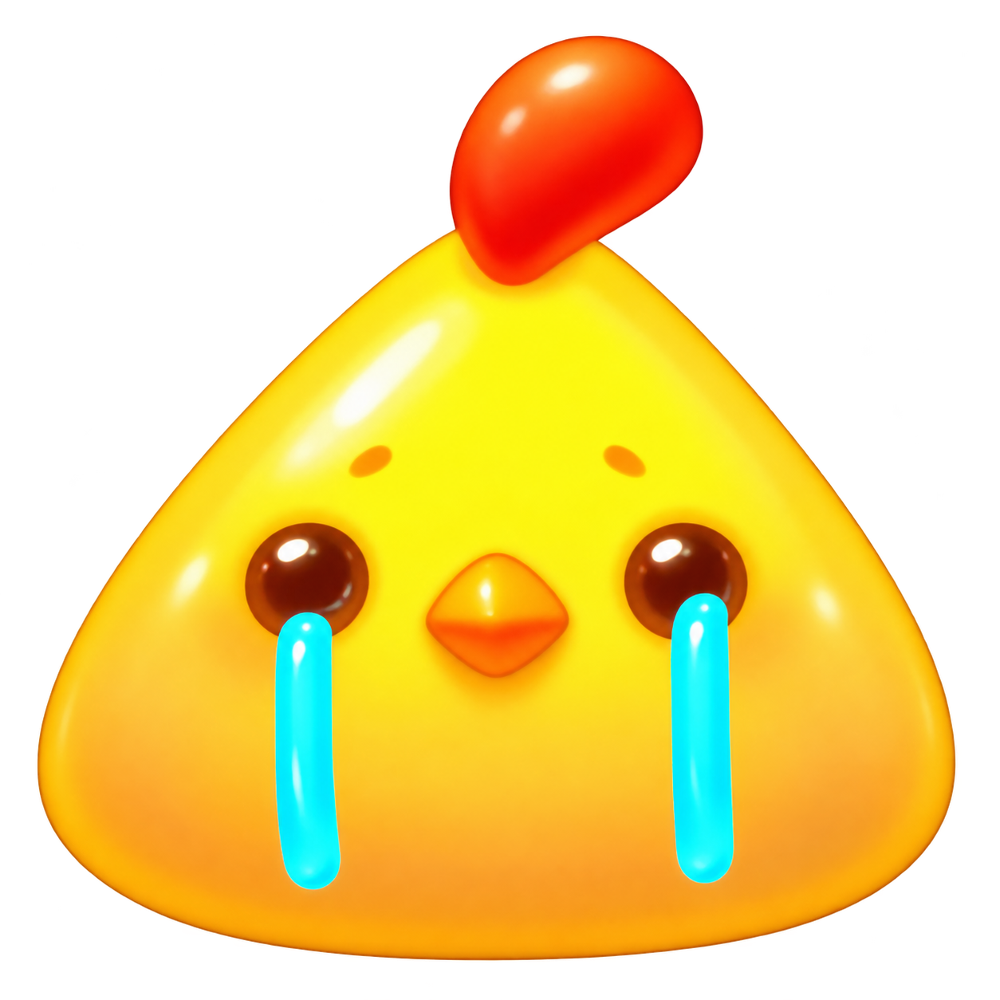

雨过之后，会有彩虹
伤心消消乐💧
把眼泪消掉，把快乐留下。
当前得分0
目标 2,400 分
剩余步数50
点击两个相邻哭脸，或按住滑动交换。
三连消除 · 连消加倍

今天也要开心呀
六种哭脸，横着或竖着连成至少 3 个同种人物即可消除。每个 30 分；1次消除 Good，2连消 Great，3连消及以上 Excellent。无效交换不扣步数。
把眼泪消掉，把快乐留下。
点击两个相邻哭脸，或按住滑动交换。

今天也要开心呀
六种哭脸，横着或竖着连成至少 3 个同种人物即可消除。每个 30 分；1次消除 Good，2连消 Great，3连消及以上 Excellent。无效交换不扣步数。